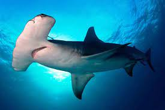

Habitad

El tiburón martillo habita en la mayor parte de las costas templadas y tropicales del mundo, principalmente en el océano Atlántico, el océano Pacífico, el mar Mediterráneo y el Indico. Prefiere las zonas costeras de pocas profundidades, aunque puede sumergirse hasta 400 metros en busca de alimento
Caracteristicas
Es de color gris oscuro o parduzco en el dorso y blanco en la zona ventral.
- Cabeza en forma de martillo
- Tiene una muesca en el centro de su cabeza
- Su cuerpo es alargado y con forma de huso
- Vive en todas la aguas templadas y tropicales del mundo, incluyendo las costas de las Islas Canarias
menú